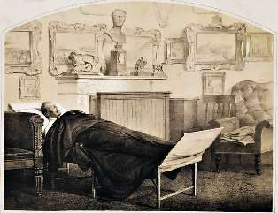

Борис Акунин
Мой календарь
Март - очень опасный месяц для тиранов, а их подданным дает шанс на избавление от дурной власти.
Для деспотов от Юлия Цезаря до Павла Первого и Иосифа Сталина первый весенний месяц стал последним. Сгинула зима, сгинул и Кащей.
После гибели Юлия Цезаря, правда, началась гражданская война. После Павла и после Сталина наступила «оттепель» - событие приятное, но умеренного масштаба.
Поэтому Днем Избавления от Тирании предлагаю назначить 2 марта, когда Россия распрощалась с царем Николаем Первым.
Этот мегаломаньяк с взглядом василиска, желавший остановить ход времени, довел свою страну до чудовищного кризиса и позорного военного поражения. Умирая от пневмонии, сказал наследнику, что «сдает ему команду не в порядке». Capital understatement, как говорят англичане.
Вполне благонамеренный и консервативный поэт Тютчев проводил «Николая Палкина» такой эпитафией:
Сгинула туча, и Россия в считанные годы превратилась из азиатской деспотии в европейскую страну со свободными крестьянами, независимым судом и гласностью. Многие считают, что то были лучшие годы российской истории. А если потом всё опять пошло вкось, так это злообразовались новые тираны.
Ничего. На каждого цезаря сыщутся свои мартовские иды.